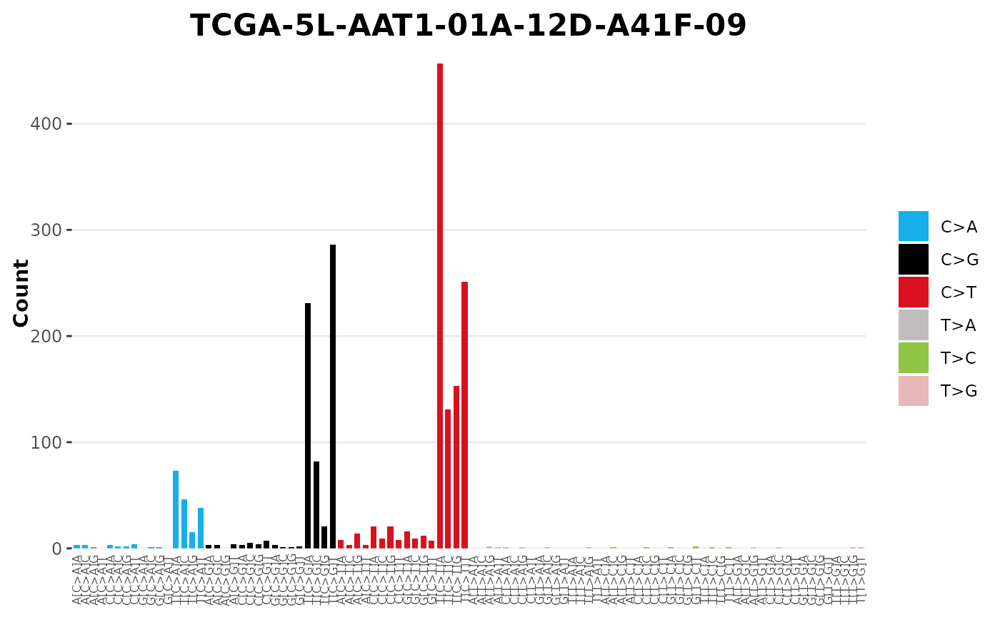

library(sigvis)
library(sigstash)
library(TCGAcatalogues)Warning: this package is in early development and not ready for general use
Background
Mutational signature analysis answers 6 key questions. Each answer can be summarized with a visualization.
- What is the observed mutational profile of a single sample
- Are there patterns in the observed mutational profile of a cohort?
- Which samples are my sample of interest most similar to with respect to their observed mutational profile?
- Does mutational signature analysis produce a good quality model from which we can draw robust inferences about a single sample?
- What does the mutational signature model of a sample say about a single sample?
- Are there patterns in the mutational signature models of a cohort?
- What does signature X look like?
Observed mutational profile
1. Single Sample Visualisation
# Load a catalogue
tally <- catalogues_load("BRCA", type = "SBS_96")
# Select a single dataframe of interest
sample = "TCGA-5L-AAT1-01A-12D-A41F-09"
tally_single_sample <- tally[[sample]]
tally_single_sample
#> # A tibble: 96 × 4
#> channel type fraction count
#> <chr> <chr> <dbl> <int>
#> 1 A[C>A]A C>A 0.00151 3
#> 2 A[C>A]C C>A 0.00151 3
#> 3 A[C>A]G C>A 0.000503 1
#> 4 A[C>A]T C>A 0 0
#> 5 A[C>G]A C>G 0.00151 3
#> 6 A[C>G]C C>G 0.00151 3
#> 7 A[C>G]G C>G 0 0
#> 8 A[C>G]T C>G 0.00201 4
#> 9 A[C>T]A C>T 0.00402 8
#> 10 A[C>T]C C>T 0.00151 3
#> # ℹ 86 more rows
# Visualise it
sig_visualise(tally_single_sample, class = "catalogue", title = sample)
#> ✔ All channels matched perfectly to set [sbs_96]. Using this set for sort order
#> ✔ All types matched perfectly to set [sbs_type]. Using this set for sort order
#> ✔ Types matched perfectly to palette [snv_type]
2A. Cohort stacked bar
2B. Per channel feature distribution in cohort context (dotplots)
Signatures
What does signature X look like?
Often there’ll be a mutational signature and want to visualise the profile.
For example lets plot the profile of signature SBS2 from COSMIC database (but same process will work for de-novo signatures)
# Load Signature
signatures <- sig_load("COSMIC_v3.3.1_SBS_GRCh38")
# Select just SBS2
sbs2 <- signatures[["SBS2"]]
# Plot
sig_visualise(signature = sbs2, title = "SBS2")
#> ✔ All channels matched perfectly to set [sbs_96]. Using this set for sort order
#> ✔ All types matched perfectly to set [sbs_type]. Using this set for sort order
#> ✔ Types matched perfectly to palette [snv_type]We can do the same with doublets, indels or de novo signatures
# Load Signature
signatures <- sig_load("COSMIC_v3.3_DBS_GRCh38")
# Select just SBS2
dbs9 <- signatures[["DBS9"]]
# Plot
sig_visualise(signature = dbs9, title = "DBS9")
#> ✔ All channels matched perfectly to set [dbs_78]. Using this set for sort order
#> ✔ All types matched perfectly to set [doublet_type]. Using this set for sort order
#> ✔ Types matched perfectly to palette [dbs_type]Custom Data and Palettes
sig_visualise allows users to provide custom colour
mappings and therefore supports all manner of custom visualisations.
# Create Custom Signature
sig_custom <- data.frame(
type = c("INDELS", "INDELS", "SUBSTITUTIONS","SUBSTITUTIONS"),
channel = c("INDELS", "DELETIONS", "SBS", "DOUBLETS"),
fraction = c(0.1, 0.1, 0.7, 0.1)
)
# Custom palette
custom_pal <- c('INDELS' = "darkorange", "SUBSTITUTIONS" = "darkgreen")
# Plot
sig_visualise(signature = sig_custom, title = "Custom Signature", palette = custom_pal)
#> ! No exact channel set match found, sorting in order of appearance
#> ! No exact type set match found, sorting in order of appearance